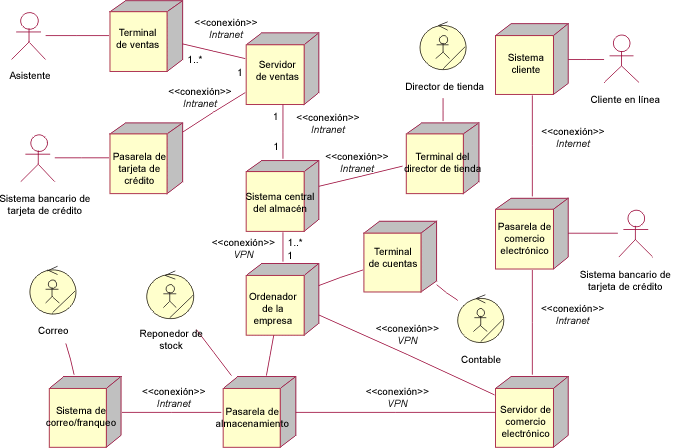

| Concepto: Especificación del componente |
 |
|
| Elementos relacionados |
|---|
IntroducciónEl desplazamiento del nivel de análisis al nivel de diseño de la arquitectura supone la determinación del diseño de componentes de software y hardware. Esta especificación de nivel de diseño consta de los componentes que se deben desplegar: hardware, software y trabajadores. Los componentes de hardware se determinan mediante el análisis de localidades, las características derivadas y las operaciones del subsistema alojado. Con esta información, se pueden seleccionar las realizaciones de nivel de descriptor. Los diagramas de nodo de descriptor especifican los componentes, servidores, estaciones de trabajo, trabajadores y demás, sin opciones de tecnologías específicas que implementen estos componentes. La imagen es un ejemplo de diagrama de nodo de descriptor que realiza el diagrama de localidad que se muestra en Concepto: Localidad. La localidad de cumplimiento se realiza en cuatro componentes: una pasarela de almacenamiento, un sistema de correo/ franqueo y dos trabajadores. Los nodos de descriptor heredan características de las localidades mediante un proceso de asignación o preparación de presupuestos. 
HardwareLos componentes de hardware de implementación, el conjunto real de hardware desplegado, se determinan mediante cambios de coste/ rendimiento/ capacidad desde la vista de descriptor. De hecho, un sistema puede tener más de una configuración de hardware, y que cada una cumpla los diferentes punto de precio/ rendimiento. SoftwareLos componentes se determinan mediante la especificación de un conjunto de clases y, a continuación, la compilación y el ensamblado del código asociado con dichas clases en archivos ejecutables. El diseño de un componente de software en su conjunto debe reflejar una variedad de temas:
La información necesaria para especificar componentes incluye las encuestas de operaciones del subsistema alojado para localidades y los componentes de hardware realizados, encuestas de operaciones ejecutadas para procesos, junto con colaboraciones, que realizan las operaciones del subsistema, que producen el conjunto de clase que se deben formar en una estructura de componentes. Como primera aproximación, parta de que todas las clases residen en un solo componente, lo que otorga una correlación de uno a uno de componente y subsistema: este es el consejo por omisión que se ofrece en Directriz de producto de trabajo: Subsistema de diseño. A continuación, busque motivos para particionar más el componente. Si el conjunto de clases contiene más de una clase activa, representando un proceso, examine una partición de una clase activa (proceso) por componente y agrupe estas clases en clúster con las relaciones más fuertes. Entonces, algunas clases podrán ser utilizadas por varios componentes. Si alguna de estas clases representa el estado compartido en un conjunto común de instancias a las que deben acceder varios componentes, hay una posibilidad de dividirlas y crear dos componentes independientes. Si las clases compartidas no tienen estado, puede escoger la opción de separarlas en un componente de servicio (un componente funcional sin estado), si son coherentes desde el punto de vista funcional. Incluso en un subsistema pasivo (sin clases activas), puede particionar más los componentes; por ejemplo, buscando componentes más concretos que se puedan volver a utilizar. Complete el proceso volviendo a particionar/ dividiendo más los componentes para que tengan en cuenta las opciones de tecnología específicas (como la plataforma J2EE™ o Microsoft® .NET), las restricciones de memoria (como los intercambios de .exe y .dll), las limitaciones de los medios de envío y etc. Estas tareas resultan en un conjunto de componentes específicos de hardware y software que constituyen el sistema. |
© Copyright IBM Corp. 1987, 2006. Reservados todos los derechos. |